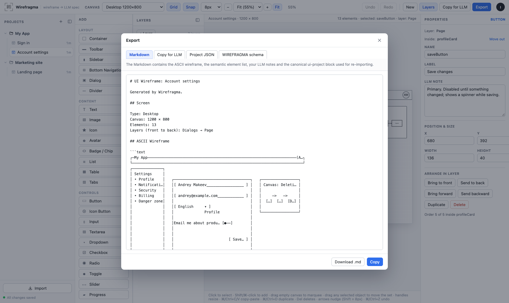

Getting started
Export & import
Everything you draw becomes text an LLM can read — and comes back without loss.

Export dialog
| Tab | What it is |
|---|---|
| Markdown | the full wireframe document (download .md) |
| Copy for LLM | the same document with a short preface telling the model how to read it (also the toolbar button) |
| Project JSON | only the canonical project (download .json) |
| WIREFRAGMA schema | instructions that teach a chat model to write a Wirefragma project |
The Markdown document
- Screen — mode, size, element and layer counts.
- ASCII Wireframe — an approximate character sketch of the layout.
- UI Elements — one section per visible element: type, layer, parent, bounds, label, visible content, typography, notes. A Canvas adds its own sketch, a numbered list of shapes and the relationships between them; a Drawing contributes its description.
- Spatial Summary — rule-based sentences about what sits where.
- Editable Project Source — the canonical JSON in a
ui-projectblock.
ui-project block, so nothing is lost even if someone edits the text around it.Exporting one layer
Layers → … → Export layer… exports only that layer's elements, optionally cropping the canvas to their content. Useful for asking a model about one form or one dialog.
Generating wireframes with a chat model
The WIREFRAGMA schema tab contains everything a model needs to produce a valid project: the document shape, the coordinate system, every element type, layers and nesting, a complete example and a JSON Schema. Paste it into a chat, describe the screen, and paste the answer into Import — a ui-project block, a json block or plain JSON all work.
Coding agents connected over MCP get the same schema from the get_wirefragma_schema tool, generated from the same source.
Import
- Accepted: a Wirefragma Markdown export, raw project JSON, or an LLM answer containing one of them.
- As a guest, Import replaces the current document. Signed in, it creates a new wireframe in the project you choose.
- Old documents (format version 1) are upgraded on import. Broken input shows an error and changes nothing.
Round trips
Export → import reproduces every project field: layers (including hidden ones), nesting, notes, typography, symbols, Canvas scenes and Drawing strokes.